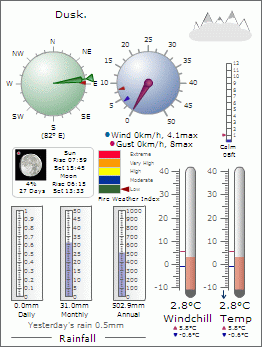

Weather Display Live works in conjunction with Weather Display to provide near real time viewing of your weather station data on the internet. Weather Display Live is a Flash® 1 movie which uses the file transferred to your website by FTP or other means from Weather Display. The data is displayed in your web browser which requires the free Adobe® 4 Flash® player plug-in 2 - this is currently installed on 96% of internet-enabled desktops worldwide 3 and is pre-installed on many browsers and computers. The data can be updated on a regular configurable basis by the user but it is suggested to set it the same as the upload from Weather Display. (See the Weather Display documentation for advice on this.)
Weather Display Live is free to use on a local PC or test web server using the executable version with no restrictions. It will run on an internet web server in evaluation mode with no time limit but an Evaluation Version notice is displayed. After registering the software you will be sent a serial number which will remove this notice and allow you to use the file as many times as you wish for that particular website.
Weather Display Live has two versions - standard and premium. The premium version allows more control over styling, especially for text and colours of instruments. Additionally certain items, such as the Weather Display Live website link, can be removed in the premium version.
Weather Display Live can be easily customised using the WDL Configurator or can be amended 'by hand' using a text editor, such as Notepad, to edit the configuration file.
1. Adobe and Flash are either registered trademarks or trademarks of Adobe Systems Incorporated in the United States and/or other countries.
2. Available from Adobe at http://www.adobe.com/shockwave/download/download.cgi?P1_Prod_Version=ShockwaveFlash
3. Adobe current statistics. You can view the latest
figures at
http://www.adobe.com/products/player_census/flashplayer/
4. Adobe website for Flash is at
http://www.adobe.com/flash
© Julian Best 2008